从理解到实践
AI 编码
训练营
了解 AI Agent 的工作方式，
再动手完成一次精简版 ls 的开发练习。
第一部分 · AI Agent 介绍
AI 编码 Agent 的发展脉络
代表节点相互重叠，并非严格分期
本页参照《AI_Agent_Framework_Loop_v3.pptx》第一页制作。时间带是课堂叙事结构，彼此重叠；产品名称仅为代表例子，不表示首发年份。末行由原稿的 2025—2026 调整为 2024—2026，以涵盖 Cursor 在 2024 年推出的早期 Agent 功能。这里的 Codex 指 2025 年发布的编码 Agent，不是 2021 年的同名代码模型。“模型 + 工具 ≈ Agent”是帮助理解的教学类比，不对应某一产品的完整实现。
论文与模型：Transformer、BERT、GPT-2、GPT-3、RAG、o1、DeepSeek-R1。
交互与产品：ChatGPT、GPT-4、Function Calling、Cursor Agent、Claude Code、Codex Agent。
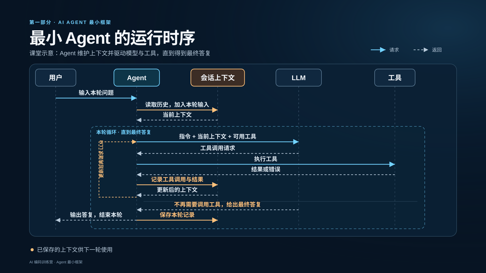
本页根据 Agent_Call_Simplified.mmd 重绘，保留了五个参与者与两条分支。图中的实线表示请求，虚线表示返回。
讲解顺序：用户输入本轮问题；Agent 读取历史并加入本轮输入；会话上下文返回当前上下文。Agent 将指令、当前上下文和可用工具送给 LLM。若 LLM 请求工具，Agent 执行工具，把结果或错误记入会话上下文，再带更新后的上下文调用 LLM。若 LLM 不再需要调用工具，便给出最终答复；Agent 输出给用户并保存本轮记录。保存的上下文供下一轮使用。
这是通用 Agent 工作方式的课堂示意。具体工具的内部实现、上下文管理和错误处理可能不同。
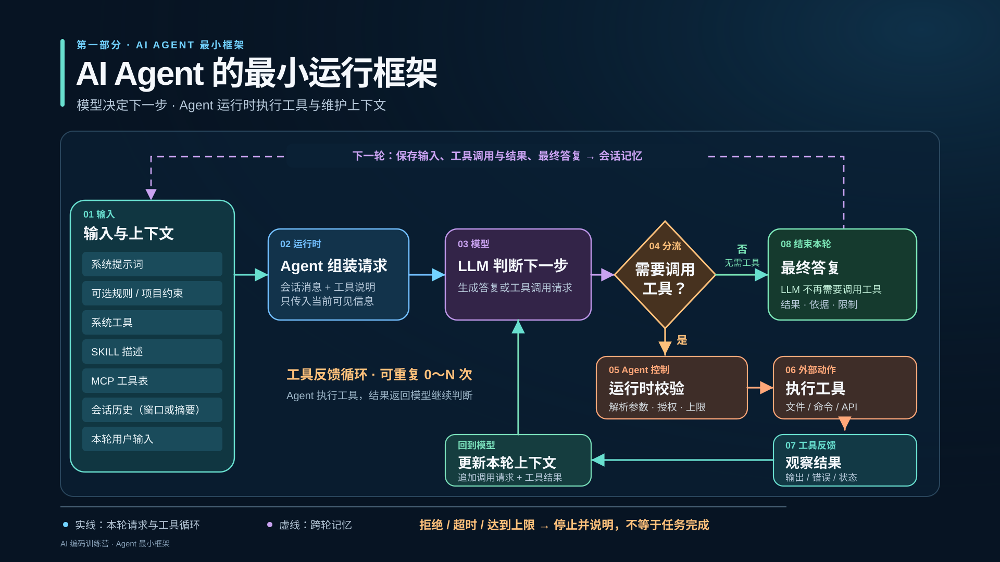
本页依据 AI_Agent_Flow_Optimized.drawio 重绘为 16:9 放映图。主线是输入与上下文 → Agent 组装请求 → LLM 判断下一步 → 工具调用判断。若不再需要调用工具，LLM 给出最终答复；若需要，Agent 先校验参数、授权与上限，再执行工具。工具的输出、错误或状态进入本轮上下文，然后返回模型继续判断。该循环可重复 0～N 次。
左侧的系统提示词、可选规则、工具说明、会话历史与本轮输入代表可能进入当前请求的可见信息。系统工具、SKILL 描述和 MCP 工具表是原图列出的工具说明来源，不表示三者都以同一种方式直接调用。会话历史可能经过窗口截取或摘要处理。
顶部虚线表示跨轮保存记录。若出现拒绝、超时或达到运行上限，Agent 应停止并说明情况；这不等于任务完成。本图是通用 Agent 机制的课堂示意，不对应某个产品的全部实现。
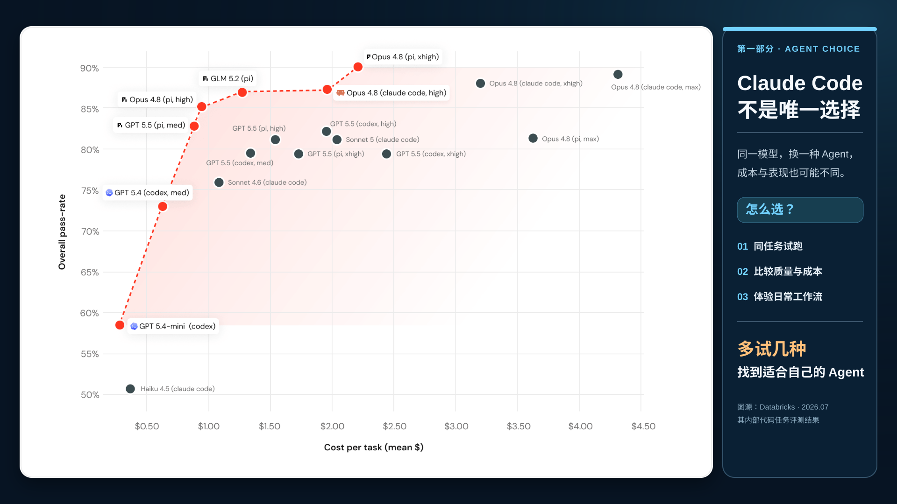
图源：Databricks 于 2026 年 7 月 8 日发布的 《Benchmarking Coding Agents on Databricks’ Multi-Million Line Codebase》。本页保留用户提供的 pareto.png 图像；横轴为平均每任务成本，纵轴为总体通过率。每个点对应模型、编码 Agent 及推理档位的组合；红色虚线表示这次评测中的成本与表现 Pareto 前沿，不代表某个 Agent 品牌。

图中的任务来自 Databricks 自有代码库。这些数值适用于该评测条件，不能当作所有场景的产品排名；前沿上也有 Claude Code 组合。比较同一模型时，Agent 与配置的变化可能改变成本或表现，但不要把不同模型或推理档位的差异都归因于 Agent。
课程以 Claude Code 作为演示工具，也鼓励学员尝试其他编码 Agent。可用相同的真实任务比较完成质量、成本、速度和操作体验，再选择适合自己项目和工作方式的组合。
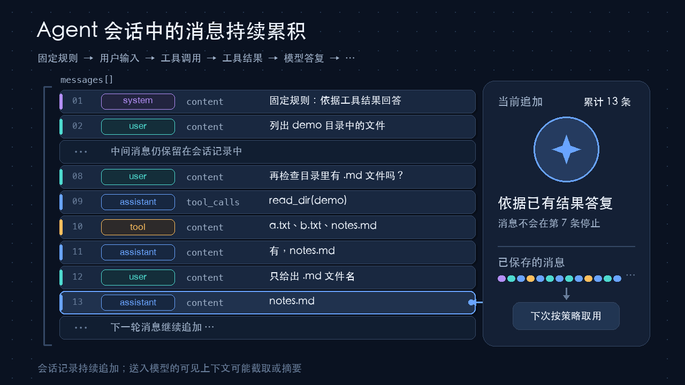
本页根据 generate_agent_message_growth_gif.py 生成的 GIF 制作。动画从 system 消息开始，依次追加 user、assistant 的工具请求、tool 结果和 assistant 答复，延伸到 13 条消息。右侧累计数随每条消息增长。
消息列表中间的省略号表示画面为容纳后续记录而略去显示的旧消息，旧消息仍属于同一会话；末尾的省略号表示下一轮还会继续追加。工具请求和工具结果各自占一条消息。这里的第 7 条只是示例中的一个阶段，不是会话上限。
示意的是会话记录持续累积。下一次模型请求实际收到的可见上下文可能经过窗口截取或摘要，并非每次都原样包含完整历史；具体取用方式取决于 Agent 实现。
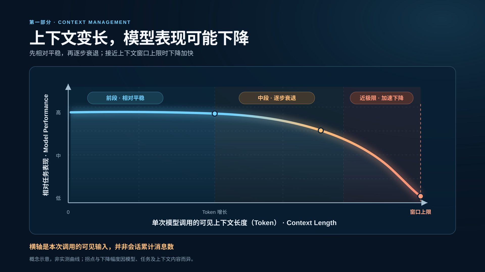
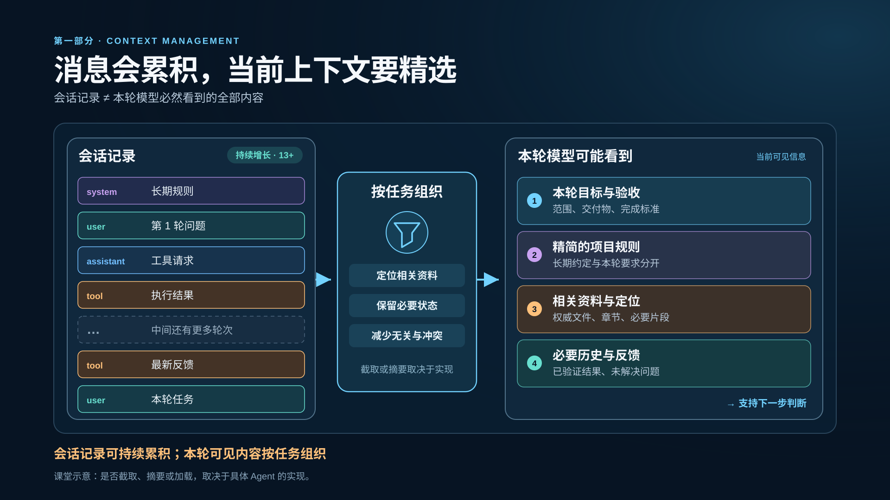
本页依据 《不修改 Agent 内部代码，如何提高使用效果》中与上下文管理相关的内容提炼。它承接前两页的消息累积与性能趋势：会话里保存的记录与某一次模型调用实际可见的信息不是同一概念。右侧四项是可能纳入当前请求的信息，应按本轮任务选取，并非每次全部加载。
给 Agent 明确目标、范围和验收标准，指出权威文件或章节；长资料提供定位线索，让 Agent 按需读取。长期规则保持精简，本轮特有要求留在本轮请求中。跨轮继续时，保留必要状态、已验证结果和未解决问题。是否截取、摘要或按需加载，取决于具体产品实现。
工具定义和 Skill 说明可能进入上下文，但“模型看见了说明”不等于工具实际可用；启用工具、权限和执行环境是另一类真实能力条件。
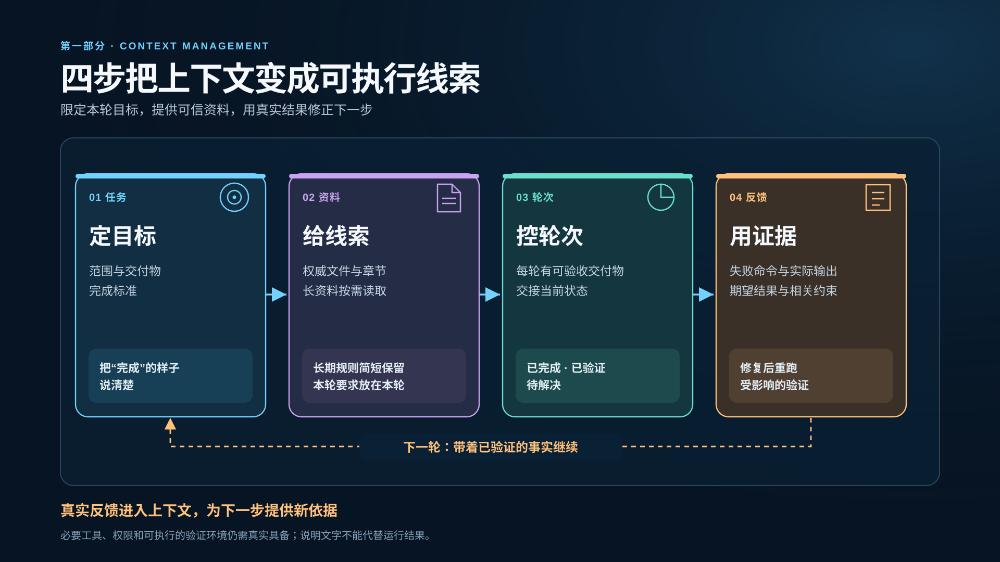
本页将 《不修改 Agent 内部代码，如何提高使用效果》中的实践建议浓缩为四步。第一步限定目标、范围、交付物和完成标准。第二步指向相关且可信的资料；长期有效的项目规则可精简地放在项目指令中，任务特有要求放在本轮请求。第三步把大任务拆为可独立验收的小轮，并交接已完成、已验证和待解决事项。
第四步用真实证据反馈：指出失败命令、实际输出、期望结果和相关约束，修复后重跑受影响的验证。审查结论只有反馈给 Agent 时，才成为下一轮可见上下文的一部分。工具是否可用、是否有权限及能否实际运行验证，还取决于外部环境，不能靠提示文字代替。
本页以课堂练习仓库中存在适用的 ./CLAUDE.md 为前提，演示终端输入 claude 后，Claude Code 在会话开始时自动读取项目指令，并在用户输入任务前将其放入初始上下文。窗口中的终端状态文字和文件正文是教学示意，不是 Claude Code 的真实界面截图，也不表示当前资料仓库实际有这个文件。
右侧只展示 CLAUDE.md 这一类项目指令。“01”表示本页聚焦的首批项目上下文，不表示它是模型上下文中绝对第一条信息；系统提示词、自动记忆、工具名称及 Skill 描述等也可能在会话开始时存在。项目根目录及当前目录的适用文件会在启动时加载，子目录中的文件通常在访问相关文件时按需加载。
官方依据：Claude Code 上下文窗口说明、Claude Code 项目指令与记忆说明。实际会话可用 /context 查看已加载的指令文件。
本页从 《一个实际代码仓库的 AGENTS.md 应写什么》 提炼四类内容，结合 Claude Code 官方最佳实践：只写长期适用、项目特有、具体且可检查的约定。真实路径、构建和测试命令应取自实际项目；图中文字是内容类别，不表示本课程资料仓库中存在这些工程目录或命令。任务临时要求留在本轮消息，完整规格和长教程放在专门文档，项目指令只指向相关依据。
Claude Code 官方说明 当前支持读取 AGENTS.md。默认情况下，若工作目录或祖先目录存在适用的 CLAUDE.md 或 CLAUDE.local.md，会优先读取这些文件；否则读取 AGENTS.md。若确需同时使用，可调整 Project instructions 设置或在 CLAUDE.md 中导入 @AGENTS.md。实际加载情况可在会话中用 /context 查看。项目指令提供的是上下文指导，并非强制执行的权限或安全配置。
从这一页开始进入课程的实践部分，题目是“从零实现精简版ls命令”。依据 Outline.md，课堂案例程序名为 myls。先澄清目标、范围和验收标准，再按需求做最小实现；把工作拆成可验收的小步，每步运行相关验证。
测试驱动开发（TDD）在本课程中的实践方式：根据澄清后的需求先写测试，确认测试能发现尚未实现的行为，再写最小代码使其通过，并在后续增量中持续回归。测试预期应以需求为依据。
终端中的文件名与输出只是未来目标效果的概念插图，并非一次真实运行；当前课程资料仓库不开发 myls。后续实现、构建和测试应发生在独立的学员练习仓库。这里的“精简版”也不表示完整复刻系统 ls。
实践 01 · 需求澄清
先把一句话需求问清楚
带着疑问与需求提出人沟通，明确要交付什么
“从零实现
精简版ls命令”
仅凭这句话，还不知道：
交付目标：使用 C 语言实现精简版 myls，支持默认目录列表以及 -a、-l、-h、-t 四个选项，无第三方运行时依赖。 运行环境为 Linux，使用 GCC 或 Clang 和 POSIX 目录接口。 默认每行输出一个文件名，不实现多列布局、颜色、递归和多个路径参数。 只接收零个或一个路径参数，默认路径为当前目录。 -h 必须与 -l 同用，否则报参数错误；非法选项和非法参数必须返回非零退出码。 输出字段、排序规则、时间格式和错误行为以验收契约为准。 系统 ls 只作为部分语义的参考实现，不把所有平台相关输出直接做字节级比较。
本页承接实践篇过渡页。面对“从零实现精简版ls命令”，开发者先与需求提出人澄清语言、环境、功能边界和验收标准，再形成右侧更具体的交付目标。左侧四个问题是课堂提问示意，并非完整问题清单。
右侧从“交付目标：”到“字节级比较。”逐字采用本轮提供的文字，保留原有七行，直接作为可选择、可复制的 HTML 文本呈现。它与 Outline.md 的相近段落有两处不同，本页以本轮文字为准。该目标属于独立的学员练习仓库，当前课程资料仓库不实现 myls。
本页承接上一页澄清得到的交付目标，提出一个课堂实验：如果把目标直接输入编码 Agent，不规定版本控制、项目结构、开发节奏或验证方式，然后一次性要求生成全部代码，会发生什么？这张图只表示抽象流程，不展示具体代码，也不宣称下列问题一定出现。
点击“揭示可能的问题”后，重点讨论版本控制、项目结构、构建产物、一次性开发的错误与审核成本，以及先实现后补测试可能导致测试迁就既有代码的倾向。具体结果将在独立的新代码仓库中现场演示和观察；当前课程资料仓库不实现 myls。
实践 03 · 需求评审
需求列表
| 场景 | 约定行为 |
|---|---|
| 无路径参数 | 列出当前目录 |
| 一个目录参数 | 列出指定目录 |
| --help | 输出帮助到 stdout 并成功退出，不执行目录读取 |
| 普通模式 | 每行一个名称，隐藏项不显示，按字节序升序 |
| -a | 包含以 . 开头的目录项，包括 . 和 .. |
| -t | 按修改时间从新到旧；时间相同时按名称升序，确保结果确定 |
| -l | 输出课程规定的固定字段和固定时间格式，不追求复制平台相关布局 |
| -h | 仅改变 -l 中的大小字段；单独使用时报参数错误 |
| 不存在或无权限 | 错误写入 stderr，返回非零，stdout 不输出伪结果 |
| 多个路径参数 | 明确拒绝并返回非零 |
本页展示需求分析与评审后得到的完整需求列表。表格文字逐项采用本轮提供的内容，并与 Outline.md 中的相应列表一致。所有表格单元格为可选中、可复制的原生 HTML 文本。
这些是独立的课堂练习仓库中 myls 的行为目标；当前课程资料仓库只保存讲解材料，不实现程序。
实践 03 · 需求评审
验收契约
- 参数：支持短选项合并、分写和重复，如 -al、-a -l；选项须在路径前，-- 结束选项解析。路径必须是目录（允许指向目录的符号链接），普通文件报错。--help 仅允许单独使用。
- 名称与排序：名称原样输出，每项以换行结束；含换行的名称不纳入教学验收。默认按 strcmp 升序；-t 比较修改时间的秒和纳秒，降序排列，同时间按名称升序。
- 元数据：目录内条目使用 lstat，不跟随符号链接；悬空链接也可列出。-l 中链接仅显示名称，不追加目标；大小取 st_size，目录不递归统计。
- 长格式：每行固定为
类型权限 链接数 用户 组 大小 时间 名称，字段间一个空格，不对齐、不输出 total。类型支持 - d l c b p s，未知类型用 ?；权限为九位，包含 s/S/t/T。用户、组优先显示名称，查询不到则显示十进制 ID。 - 时间：统一 UTC，格式为 YYYY-MM-DD HH:MM:SS，不随文件新旧改变格式。
- 大小：默认输出十进制字节数；-h 使用 1024 进制，单位为 B/K/M/G/T/P/E。不足 1024 输出整数加 B，其余保留一位小数、四舍五入；舍入达到 1024 时进位。例如 0B、1023B、1.0K、1.5K。
- 退出与错误：成功返回 0，stderr 为空；参数或文件系统错误返回 1，stdout 为空，stderr 输出以 myls: 开头的一行说明。目录读取或任一所需元数据获取失败时整次失败，收集成功后再输出；不逐字匹配系统错误文案。
验收示例：目录 demo 仅含空文件 b、a、.hidden；下表中 \n 表示换行。
| 命令 | stdout | stderr | 退出码 |
|---|---|---|---|
| myls demo | a\nb\n | 空 | 0 |
| myls -a demo | .\n..\n.hidden\na\nb\n | 空 | 0 |
| myls -h demo | 空 | myls: 开头的错误说明 | 1 |
| myls missing（路径不存在） | 空 | myls: 开头的错误说明 | 1 |
-l 格式示例：-rw-r--r-- 1 alice dev 1536 2026-01-02 03:04:05 a；加 -h 后仅将 1536 改为 1.5K。测试须设置权限、大小和时间，用户与组按测试环境解析。
本页逐字呈现本轮给出的七条验收契约、示例说明、四行示例表格和长格式示例。正文为可选中、可复制的原生 HTML；示例中的 \n 是字面的反斜杠与 n，用来表示换行，不是实际换行符。
课堂练习应在独立的新代码仓库中执行。验收规则取自课程练习规格 Outline.md，系统 ls 只供部分语义参考。
本页承接需求列表与验收契约，讲解独立课堂练习仓库中的开发起步顺序：先初始化 Git 仓库、建立工程骨架、写项目指令，再以 build project skeleton 为提交信息创建可回滚的基线，随后按 TDD 小步实现需求。右侧目录树是将来要创建的练习项目示意；当前课程资料仓库不新建 myls 的源码、测试或构建文件。
CLAUDE.md 只写长期适用的项目约定：项目目标与已评审契约的真实位置，源码和测试目录及真实可运行的命令，最小实现与测试先行的开发边界，以及每步验证和交付证据。新练习仓库尚未确定契约文件路径，写入时应指向实际存在的文件；不把当前资料仓库的 Outline.md 假定为练习仓库文件。
TDD 的基本循环是红、绿、重构：先针对下一条可验证需求写测试并确认它因缺少目标行为而失败；再写最少代码让测试通过；最后整理代码并保持测试通过，然后进入下一条小需求。右侧回环箭头表示这个过程会重复进行。
Git 不跟踪空目录。若初次提交需要包含 include/、src/、tests/，应在练习仓库中放入占位文件或最小骨架文件后提交。目录树和五步流程是教学计划，并非本仓库中已经执行过的命令或测试。
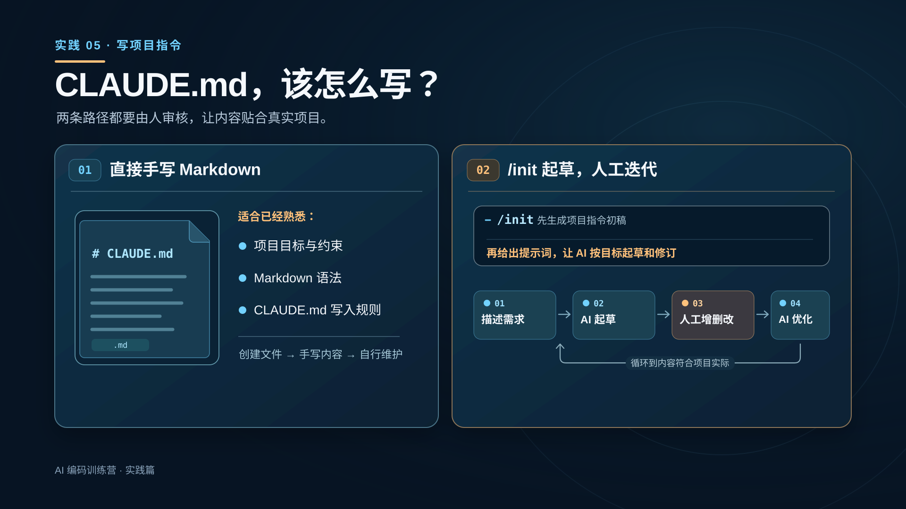
/init 之后 · 补充项目要求
给 Claude 的示例提示词
CLAUDE.md · 补充项目约定
其他信息
本页从“如何写 CLAUDE.md”提问。第一种方式是直接创建 Markdown 文件并手写，适合熟悉项目事实、Markdown 和项目指令写法的人。第二种方式是在 Claude Code 会话中运行 /init 生成初稿，再根据已澄清的需求补充提示词，人工审阅、增删改，并请 Claude 继续优化；循环到内容具体、准确且适用于当前项目。
Claude Code 官方文档说明，/init 可以生成初始 CLAUDE.md，项目记忆说明进一步指出它会分析现有代码库；若文件已存在，会建议改进而不是直接覆盖。官方未明确把“/init + 提示词”列为固定的单行命令语法，因此图中将运行命令和补充提示词画成连续两步。项目刚起步时，代码库能提供的信息有限，提示词中的交付目标和协作规则需要人工核对。
点击第二种方式的按钮后，提示词使用可选中、可复制的原生 HTML 文本。正文逐字保留本轮提供的内容，包括 Red → Green → Review；“构建与测试：”后原文的 U+000B 不可见字符也保留在文本数据中。此处的 myls 是未来独立课堂练习仓库的交付目标，本资料仓库不实现程序。
“其他信息”展开的是讲师本轮提供的开发原则、Red-Green-Review 步骤、提交纪律、构建测试命令、测试规范和禁止事项。两列均保留原文 Markdown 标记与换行，且可直接选择；“复制全部文本”按原文顺序一次复制全部内容。它是供将来补充进独立练习项目 CLAUDE.md 的素材，不表示这些文件或命令已经在本资料仓库创建、运行或验证。
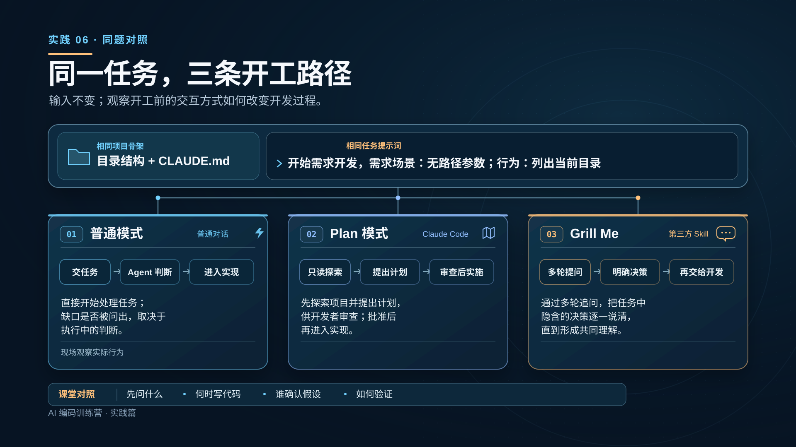
Anthropic 官方说明 ↗ Grill Me 参考链接 ↗讲师预设 · 用于现场验收
期望行为与测试场景
期望行为
. 和 ..期望测试场景
这些条件没有写入上方的共同任务提示词；课堂演示时用它们对照结果。
本页为课堂现场对照。三个演示都从同一个独立练习项目骨架（目录结构与 CLAUDE.md）出发，并使用同一句任务提示词：“开始需求开发，需求场景：无路径参数；行为：列出当前目录”。页面不展示项目代码，也不预告实际实现结果。
普通对话可以直接处理任务；是否主动追问遗漏的条件，要看本次 Agent 的实际行为。Anthropic 官方 Plan 模式说明描述了先探索项目、提出计划供人审查，批准后再实施的流程。Grill Me 是第三方 Skill，用多轮提问澄清任务中的隐含决策，本身不是 Claude Code 内置模式，也不直接写实现代码。
“期望输出”按钮揭示本轮讲师预设的行为与测试场景：包含隐藏项但排除 . 和 ..，不做排序；测试非空目录、空目录、包含空格的名称，并在两个不同目录下测试。这些条件不是给 Agent 的共同任务提示词。讲师可在独立实践项目中展示三次对话和相应工作成果，观察它们先问了什么、何时进入代码、由谁确认假设、怎样验证。此页不代表这些演示或测试已经在当前课程资料仓库执行。
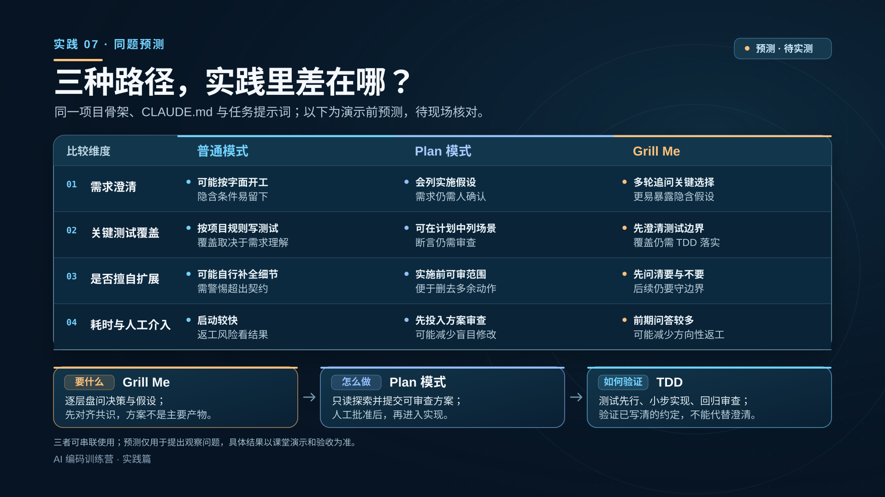
这一页先提出观察假设，不能把表中的倾向当成已经测得的结果。课堂上三次演示应使用同一个独立练习项目骨架、同一份 CLAUDE.md 和同一句任务提示词。普通模式也受项目指令中的 TDD 规则约束；三条路径的测试覆盖、范围控制和耗时最终要看实际对话、代码与验收结果。
Grill Me 作者说明及其核心 Skill强调多轮盘问决策与隐含假设，直到双方形成共识；它可以给建议，但目标不是替用户敲定实现方案。Claude Code 官方 Plan 模式说明强调先探索项目、形成可审阅的计划，批准后再实施。两者会有交集，页面以各自主要作用区分。
本课采用的 TDD 是 Red → Green → Review：先写能暴露缺失行为的测试，再做最小实现，最后回归和人工审查。它约束实现与验证步骤，但测试只能检查已写明且断言正确的行为，不能代替需求澄清；通用 TDD 循环可参见 Martin Fowler 的说明。
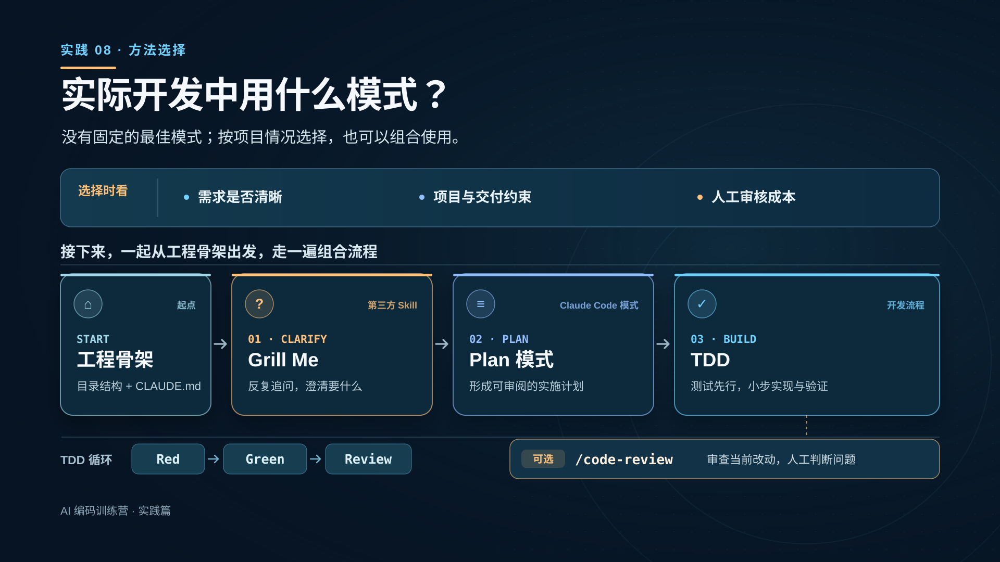
这是一页从三种路径对比转向课堂实操的过渡页。这里说的“模式”是课堂上的宽泛说法：Grill Me 是第三方 Skill，Plan 是 Claude Code 的工作模式，TDD 是开发流程。根据需求清晰度、项目与交付约束和人工审核成本，选择适合自己的组合；没有固定排名，也不要把前页的预测当成实测结论。
接下来在独立的 myls 练习项目仓库中，从目录结构、CLAUDE.md 与构建/测试入口组成的工程骨架开始：先用 Grill Me 澄清“要什么”，再用 Plan 模式形成并审查“怎么做”，随后用本课约定的 Red → Green → Review 循环小步实现与验证。可选用 /code-review 复核当前改动，审查结果仍由人判断和处理。本课程资料仓库不实现 myls。
产品与方法依据：Grill Me 原项目；Claude Code Plan 模式；Claude Code 本地代码审查；TDD 参考。
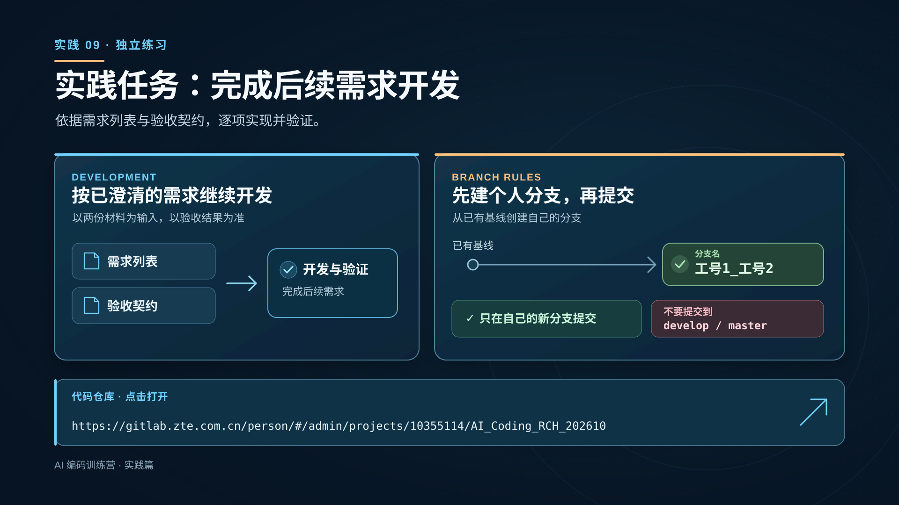
https://gitlab.zte.com.cn/person/#/admin/projects/10355114/AI_Coding_RCH_202610这一页布置独立练习项目中的后续开发任务。学员依据此前展示的需求列表与验收契约，继续完成后续需求开发并验证。课程资料仓库不开发或提交 myls。
强调分支纪律：在已有基线上创建个人分支，分支名按 工号1_工号2 命名，只在自己新建的分支上提交；不要直接提交到 develop 或 master。页面中的 GitLab 地址来自讲师提供的链接；制作本页时未访问仓库，也未验证登录权限或仓库内容。
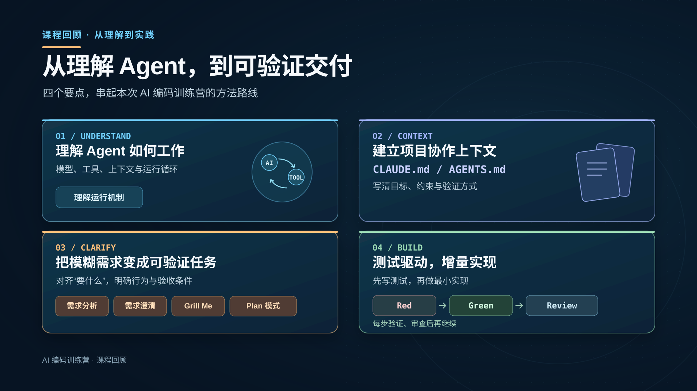
用这页收束全课：先理解 Agent 的基本工作循环，再为项目提供清楚、适用的协作上下文；把模糊需求分析和澄清为明确行为、验收条件及可审查的实施任务；最后用测试先行和小步回归推进实现。这里的“可验证交付”是课程方法目标，不表示课堂练习项目已在本资料仓库完成。
CLAUDE.md 与 AGENTS.md 是项目指令文件，应按实际使用的 Agent 工具选择和核对加载方式；参见 Claude Code 项目记忆说明。Grill Me 是第三方 Skill；Plan 模式是 Claude Code 的工作模式。课程中的 TDD 表述为 Red → Green → Review，强调先写测试、做最小实现、回归与人工审查；通用方法可参考 TDD 介绍。
感谢大家参加 AI 编码训练营。结束页与开场封面使用同一张编码工作流插画；收尾寄语是“理解原理，动手实践；相互交流，共同进步”。上下两句各为四字加四字，作为课程方法与同伴交流的呼应。